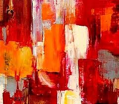
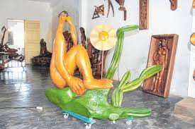

Dica de Pintura
Aqui está uma bela pintura:
- Obra de arte em acrílico
- Sem moldura, só tecido (tamanho 1x1 metro)
- Recursos de arte recomendados:
- Pincéis de alta qualidade
- Tintas acrílicas de várias cores
- Paleta para misturar cores
- Canvas ou tela de pintura
Dica de Escultura
Confira esta incrível escultura:
- Uma peça representa o quadro "Abaporu"
- Obra da artista plástica Tarsila do Amaral
- Símbolo do Movimento Antropofágico
Outras Dicas de Arte
Aqui estão mais algumas dicas de arte:
| Recurso | Descrição |
|---|---|
| Pincéis de alta qualidade | Pincéis profissionais para pintura |
| Tintas acrílicas de várias cores | Um conjunto de tintas acrílicas de alta qualidade em diversas cores |
| Paleta para misturar cores | Uma paleta de mistura para criar cores personalizadas |
| Canvas ou tela de pintura | Uma tela de pintura em branco para suas obras de arte |